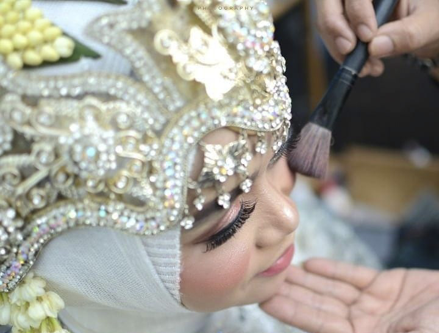

Cerita Kami
Putri Ayu Salon adalah salon kecantikan yang berfokus pada perawatan rambut, wajah, makeup, dan kuku. Sejak 2018 kami percaya bahwa cantik itu bukan soal mengubah diri jadi orang lain, tapi tentang membuat kamu merasa nyaman dan percaya diri dengan dirimu sendiri.
Setiap pelanggan datang dengan kebutuhan yang berbeda: ada yang ingin rambutnya kembali sehat, ada yang butuh wajah lebih segar sebelum acara penting, ada juga yang sekadar ingin istirahat sejenak. Karena itu kami selalu mulai dengan ngobrol dan konsultasi, baru menentukan perawatan yang paling pas.
Kami menggunakan produk yang aman, menjaga kebersihan alat, dan menyediakan ruangan nyaman dan tenang. Harganya kami jaga tetap terjangkau supaya perawatan berkualitas bisa dinikmati siapa saja.
Our Journey
Putri Ayu Salon dibuka dengan satu tujuan sederhana: menghadirkan perawatan rambut yang rapi, bersih, dan terjangkau untuk warga sekitar.
Permintaan pelanggan membuat kami menambah facial dan perawatan kulit, sehingga salon tidak hanya mengurus rambut tetapi juga wajah.
Kami mulai melayani riasan untuk wisuda dan pengantin, serta perawatan kuku seperti manicure, pedicure, dan nail art.
Kepercayaan pelanggan terus tumbuh. Kami tetap menjaga pelayanan personal dan konsisten pada kualitas.
Meet The Owner
Pemilik & Stylist Putri Ayu Salon
Titin Wartini mendirikan salon ini dari kecintaannya pada dunia kecantikan. Berawal dari melayani tetangga dan teman, usahanya perlahan tumbuh berkat pelanggan yang puas dan kembali lagi.
Hingga kini seluruh perawatan ditangani langsung oleh Titin Wartini sendiri. Artinya setiap pelanggan mendapat perhatian penuh, konsultasi yang jujur, dan hasil yang dikerjakan dengan teliti dari awal sampai akhir.
Vision & Mission
Menjadi salon pilihan utama yang membuat setiap wanita merasa cantik alami dan percaya diri.
Our Values
Kami melayani seperti melayani keluarga sendiri, jujur soal apa yang cocok dan tidak untukmu.
Alat dibersihkan dan disterilkan, produk dipilih yang aman dan terdaftar BPOM.
Ruangan yang tenang supaya waktu perawatan terasa seperti me time.
Terus belajar teknik dan tren terbaru agar hasilnya selalu relevan dengan gayamu.